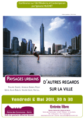

|
 Les séjours d'été organisés par la Ville de Serris Les séjours d'été organisés par la Ville de Serris |
Comme chaque été, les services Enfance, Jeunesse et Sports organisent plusieurs séjours :
ENFANCE
Du 18 au 23 juillet 2011
Séjour “La nature et ses secrets” en Dordogne pour les enfants scolarisés en CM1 et CM2 en 2010/2011.
Du 15 au 20 août 2011
Séjour “Péniche” dans la Nièvre pour les enfants scolarisés en CE1 et CE2 en 2010/2011.
SPORT
Du 4 au 13 juillet 2011
Séjour sportif à Wimereux (Pas de Calais) pour les enfants âgés de 11 à 14 ans.
INSCRIPTIONS POUR CES 3 SÉJOURS
Samedis 21 et 28 mai, de 9h00 à 12h00 auprès du service Maëlis.
> + d'infos
JEUNESSE
Du 18 au 23 juillet 2011
Le service Jeunesse propose cet été la mise en place d’un séjour à Vendres dans l’Herault, avec excursion à Barcelone pendant 2 jours. > + d'infos |
Concours des maisons fleuries 2011 |
Conférence culturelle :
paysages urbains,
d'autres regards sur la ville |
Philippe COGNEE, Andreas GURSKY, Peijun WENG, Alain BUBLEX, Valérie JOUVE, Hao LU,….
Des artistes peignent, certains photographient, d’autres reconfigurent les villes.Dans des pays différents, un grand nombre d’artistes, interrogent le milieu urbain, les villes en mutations. La solitude des citadins, la surpopulation, la répétition des habitats, la monotonie des réseaux urbains sont questionnés, revus et corrigés par les artistes qui introduisent et réinjectent dans le quotidien poésie, imaginaire et humanité.
|
|
 |
Festi'Ram, une animation 100% petite enfance ! |
Vendredi 6 mai, à 20h00 et Samedi 7 mai, de 10h00 à 14h00, Château de Chessy |
Cette année, le Relais parents assistantes maternelles du SAN du Val d’Europe vous propose de décliner cette animation en deux temps forts : Une conférence de Jean Epstein le vendredi 6 mai à 20h au Château de Chessy sur le thème « Qu’est-ce que tu as fait aujourd’hui ? RIEN, j’ai joué ! »
Jean Epstein posera les limites et les grands principes de la stimulation de l’enfant. Doit-on stimuler l’enfant tout au long de la journée ? Quelles sont les limites de l’enfant face à trop de stimulations ?
Des ateliers et animations le samedi 7 mai de 10h à 14h dans le Parc du Château de Chessy
Plus d’infos auprès du RAM
service vie locale au 01 60 43 66 26 ou
vielocale@valeurope-san.fr |
|

|
Randonnée à Longueville |
Cérémonie du 8 mai |
| Dimanche 8 mai, 11h00, Mairie du Bourg |
Cérémonie de commémoration de l'Armistice
Une gerbe en mémoire des Serrissiens morts pour la France, sera déposée au Monument au Morts.
Cette cérémonie sera suivie d'un vin d'honneur en Mairie du Bourg. |
Ramassage des ordures extra-ménagères |
Prévention et dépistage anonyme et gratuit |
| Jeudi 12 mai, de 12h00 à 18h00, Place d'Ariane |
VIH-sida, Hépatite B, Hépatite C, Syphilis ? Plutôt que de m'interroger, je viens me faire dépister !
Le Centre de Dépistage Anonyme et Gratuit, la ville de Serris, la Maison des Jeunes et tous ses partenaires vous proposent le jeudi 12 mai, de 12h00 à 18h00, place d'Ariane (face au RER) : prévention et dépistage anonyme et gratuit
Pour plus d'infos : CDAG au 01 64 30 75 38.
|
|

|
Concours de pétanque |
| Samedi 14 mai, 14h00, Maison communale des 4 Saisons |
2e Salon Départemental dédié aux salariés |
| Samedi 14 mai, de 13h00 à 17h00, Maison des services publics, Chessy |
«Salariés, une journée pour tout changer à tout âge»
Maison des Services Publics - Boulevard Olof Palme – 27 place d’Ariane (77700 Chessy)
> + d'infos
|
|

|
Réunion Publique : le budget communal |
| Mercredi 18 mai, 20h30, Ferme des Communes |
Denis GAYAUDON, Maire de Serris, et l’ensemble de la Municipalité ont le plaisir de vous convier à une réunion de présentation du budget 2011 de Serris :
mercredi 18 mai 2011 à 20h30, à la Ferme des Communes,
Lors de cette réunion, vous participerez à une présentation et une explication détaillée du budget communal. Chaque Serrissien sera alors informé des choix et des priorités fixés par les élus de la Commune.Dans l’attente de vous accueillir.
Un verre de l’amitié sera servi à l’issue de cette réunion.
|
|

|
Journée de l'archéologie - de la fouille au musée |
Samedi 21 mai, de 10h00 à 17h30, Impasse de la Ferme du Couternois
(à côté de la Brocante) |
Organisée par l'INRAP
Portes ouvertes
diagnostic archéologique
Rencontre avec les archéologues
Présentation des méthodes de recherche et d'étude de l'archéologie préventive
Exposition : "vous avez dit archéologie préventive ? |
|

|
|
|